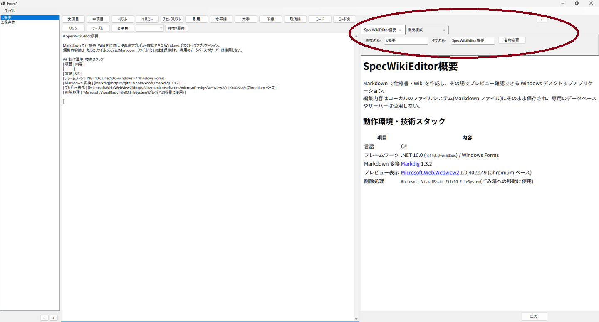

タブ(フォルダ)管理

- タブはプロジェクトルート直下のサブフォルダ1つに対応する(
assetsフォルダはタブとして扱わない)。 - 起動時、既存のフォルダ構成から自動的にタブ一覧を生成する。
- タブバー右上の「+」ボタン押下 → 名称入力ダイアログ(デフォルト値「新規タブ」)
→ フォルダ名として使用できない文字を除去
→ 同名フォルダが既に存在する場合は名前(1),名前(2)... のように連番を付与して重複を回避
→ フォルダを作成し、空のままだと編集できないためサンプル1.概要.mdを自動生成
→ 新しいタブを選択状態にする。 - 各タブの右側に描画された「×」ボタン押下 → 確認ダイアログ(はい/いいえ)を表示 → 「はい」の場合のみ、フォルダ内の全ファイルごとごみ箱に移動して削除(誤操作時も復元可能)。
「いいえ」の場合は何もしない。 - タブページ本体内の「タブ名称」欄に新しい名前を入力し「名称変更」ボタンを押すと、フォルダ名を変更する(
Directory.Move)。
変更先と同名のフォルダが既に存在する場合はエラーメッセージを表示し変更しない。
リネーム対象のタブで編集中だったファイルがある場合は、パス参照を新フォルダに追従させる。 - 「TOP」という名前のタブは特別扱いされ、常にタブの一番左(先頭)に強制配置される(「9. サイト出力」でサイトの入口ページとして使うため)。
タブ一覧の再構築時・新規タブ追加時・タブ名称変更時のいずれのタイミングでも、「TOP」タブが存在すれば自動的に先頭へ並び替えられる。